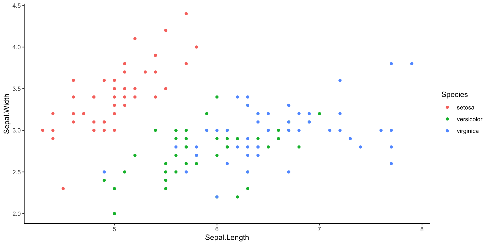

Call:
lm(formula = mpg ~ wt, data = mtcars)
Residuals:
Min 1Q Median 3Q Max
-4.5432 -2.3647 -0.1252 1.4096 6.8727
Coefficients:
Estimate Std. Error t value Pr(>|t|)
(Intercept) 37.2851 1.8776 19.858 < 2e-16 ***
wt -5.3445 0.5591 -9.559 1.29e-10 ***
---
Signif. codes: 0 '***' 0.001 '**' 0.01 '*' 0.05 '.' 0.1 ' ' 1
Residual standard error: 3.046 on 30 degrees of freedom
Multiple R-squared: 0.7528, Adjusted R-squared: 0.7446
F-statistic: 91.38 on 1 and 30 DF, p-value: 1.294e-10Quarto reveal.js template
School of Life and Environmental Sciences (SOLES)
Januar Harianto
The University of Sydney
Aug 2025
About
Important
This template is on a Creative Commons Attribution-ShareAlike 4.0 International License. If you choose to use this template, please attribute the source. You may also share your work under the same license. For example:
This presentation is based on the SOLES reveal.js Quarto template and is licensed under a Creative Commons Attribution 4.0 International License.
Note that you do not need to license your presentation under cc-by 4.0. You can choose a different license, or no license at all. The only requirement is that you attribute the source.
Quarto
A technical writing system that produces reproducible, versioned, and extensible documents – the next generation of R Markdown.

Features (HTML)
Follows the University of Sydney brand guidelines.
- Logos - Primary logo on the title slide (black), and secondary horizontal logo on all other slides.
- Colours - Uses the official University of Sydney colours Ochre, Charcoal, Heritage Rose, Jacaranda and Eucalypt.
PDF output
- You must have Chrome, or a Chromium-based browser installed.
- Open the HTML output in Chrome.
- Press the
Ekey to enter print mode. - Print to PDF using
ctrl+p(Windows) orcmd+p(macOS).
Quick start
Installing Quarto
Quarto is available for Windows, macOS, and Linux. See installation instructions.
Recommendation
Visual Studio Code is recommended as the editor for Quarto. It is free, open-source, and has a lot of extensions that can be used to enhance the writing experience.
However…
Users familiar with RStudio can also use it to write Quarto documents. See here for more information.
Installing this template
There are three (3) ways:
1. Recommended: Use the Quarto CLI
With the Quarto CLI installed, run the following command in your terminal and follow the instructions:
2. Download the template directly
You can download the template folder directly from GitHub, ready to use. Go to the repository and click on “< > Code”, then “Download ZIP”. Once you unzip the folder.
3. Clone the template repository
Go to the repository and click on “Use this template”. Note that you will need to be familiar with Git and GitHub to use this method.
Editing the template
All written content is in the template.qmd file. You may rename this file to whatever you like.
HTML output
Slides that are generated from this template are in HTML format. You can view the slides by opening the .html file in your browser. This file is generated in the same folder as the .qmd file.
Options
Edit the _quarto.yml file to override the default options. For example, you can enable or disable the table of contents, change the theme, and more. You will need to know about Quarto project basicsto do this.
Markdown
Flavour
Quarto uses Pandoc-flavoured Markdown for text formatting.
Formatting
Bold and italic. Inline code. What about a link? And a footnote1? We can also use subscripts and superscripts.
Lists
- Lists must be preceded by a blank line.
- We can also created nested lists:
- This list is ordered.
- Next item in the list, nested and back to unordered.
- This list is ordered.
Advanced features
Reproducible workflows
The advantage of Quarto over traditional slide software is that it allows code and output to be embedded in the document. This means that you can create a document that is reproducible and versioned.
For example, the source of this slide is in the template.qmd file.
Code example 1
Using R, we show how to fit a linear regression model and print the model summary. Click on the code dropdown to see the code.
Code example 2
In this example code folding is not activated, allowing viewers to see the code that generates the plot.
Code example 3
In this example we use the #| output-location: column execution option to automatically place the output in a column next to the code. As execution options are not shown in Quartz slides, you will need to view the .qmd source of this slide to see how it is implemented.
Equations
Equations are based on LaTeX and powered by MathJax.
Inline equations
Inline equations are surrounded by $. For example, the equation y = \beta_0 + \beta_1 x + \epsilon is a linear regression model.
Display equations
Display equations are surrounded by $$. For example, one way to display the equation for a Fourier series is:
f(x) = \frac{a_0}{2} + \sum_{n=1}^{\infty} \left[ a_n \cos \left( \frac{2 \pi n x}{L} \right) + b_n \sin \left( \frac{2 \pi n x}{L} \right) \right]
Callout blocks
Note
Callout blocks are a way to draw attention to important points. They are rendered in a larger font size in this template.
Tip
Read more about callout blocks in the Quarto documentation.
Thanks!
This presentation is based on the SOLES Quarto reveal.js template and is licensed under a Creative Commons Attribution 4.0 International License.